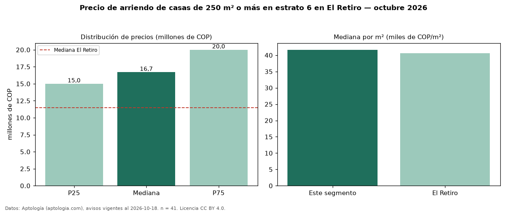

Precio de arriendo de casas de 250 m² o más en estrato 6 en El Retiro — octubre 2026
En El Retiro, la mediana de canon mensual de casas de 250 m² o más en estrato 6 es COP 16,70 millones, según 41 avisos vigentes. Frente a la mediana de las casas en estrato 6 en arriendo de El Retiro (COP 16 millones, n = 55), queda 4 % por encima; este segmento reúne el 75 % de esos avisos. Por metro cuadrado, la mediana es COP 41.667/m² al mes (n = 41), 8 % por debajo de las casas en estrato 6 en arriendo de El Retiro (COP 45.340/m²). El área mediana anunciada es 390 m². El segmento con más oferta es el de 3 o más habitaciones (39 avisos, mediana COP 16,70 millones). La mediana de todas las casas en arriendo de El Retiro es COP 11,50 millones (+45 % de diferencia). La mitad central de los avisos va de COP 15 millones a COP 20 millones (razón 1,3), una dispersión baja. Datos: Aptología (aptologia.com), CC BY 4.0 — https://www.aptologia.com/arriendo/el-retiro. Archivos: PDF, CSV con las cifras y gráfica PNG.

| Avisos únicos | 41 |
|---|---|
| Percentil 25 | COP 15.000.000 |
| Mediana | COP 16.700.000 |
| Percentil 75 | COP 20.000.000 |
| Mediana por m² | COP 41.666 |
Fuente: avisos vigentes de portales inmobiliarios recopilados por Aptología, deduplicados (mínimo 30 avisos únicos por celda). Precios pedidos, no cerrados. Fecha: 2026-10-18.